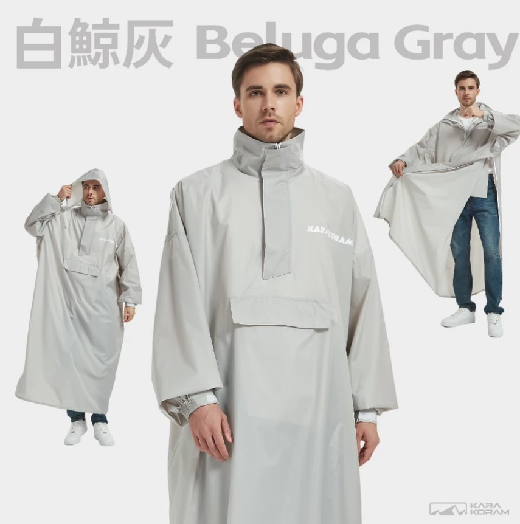
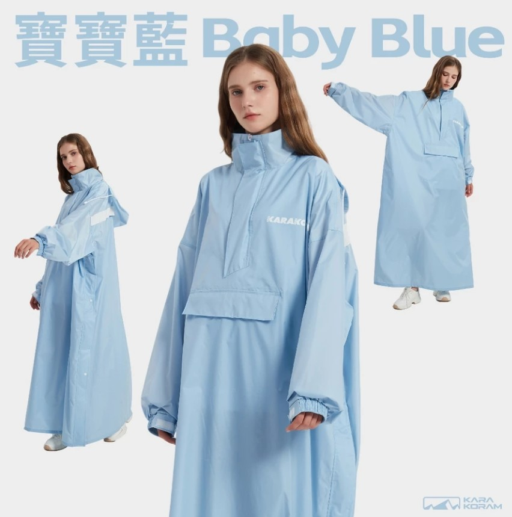

每次下雨，是不是都要跟雨衣奮戰一番？手忙腳亂把頭套進去、袖子卡在半路、拉鍊怎麼拉都對不準——還沒穿好，肩膀已經先濕一片。傳統雨衣最惱人的，從來不是防不防水，而是那個「穿」的過程太狼狽。
最近看到一款側開設計的一件式雨衣，主打「從側邊拉開、秒套上」，把穿脫這件事變簡單了。這篇就來聊聊它解決了什麼痛點，以及挑這類雨衣可以注意什麼。
為什麼「側開」是個聰明設計
一般的一件式雨衣多半是「套頭式」——要從頭上整件罩下來。問題是：
- 頭髮、眼鏡容易被卡到或弄亂
- 手臂要在看不到的情況下亂摸找袖口
- 急著穿的時候特別容易卡住
側開設計換了個思路：雨衣側邊有一道開口（通常是拉鍊或魔鬼氈），穿的時候像穿外套一樣從側邊拉開、手臂直接伸進去，套上後再把側邊合起來。整個動作直覺很多，幾秒就能穿好，尤其在騎車前、突然下雨要衝進店裡這種時刻，差別很明顯。

一件式 vs 兩件式，怎麼選
雨衣大致分兩種，各有適合的場景：
| 一件式（連身） | 兩件式（分開上下身） | |
|---|---|---|
| 穿脫速度 | 快，一件搞定 | 較慢，要穿兩件 |
| 防護範圍 | 上半身與大腿為主 | 全身包含褲管 |
| 適合場景 | 通勤、短程、臨時下雨 | 長途騎車、大雨 |
| 收納 | 輕便好帶 | 體積較大 |
如果你主要是短程通勤、走路、臨時遇雨，一件式的輕便和快速穿脫就很夠用；要長途騎車淋大雨，才需要兩件式的全身防護。這款側開一件式，定位就是「日常好穿、說走就走」。
挑一件式雨衣可以看這幾點
除了側開設計，買之前還可以留意：
- 防水材質：看布料是否有防水塗層或壓膠，接縫處有沒有做防水處理
- 透氣度：雨衣最怕悶，有些會做網布內襯或透氣孔，久穿比較舒服
- 帽子設計：帽緣有沒有壓條、能不能收緊，不然雨會順著臉流下來
- 版型：這也是這款的賣點之一——版型俐落，穿起來比較像一件風衣，而不是「罩了一個塑膠袋」

不只實用，還能穿得好看
說實話，很多人不愛穿雨衣，有一半原因是「醜」。傳統雨衣要嘛透明塑膠感、要嘛顏色很突兀，穿上整個造型就垮了。
這款在外型上有花心思：版型收得比較有線條、顏色也走素雅路線，下雨天穿出門不會覺得邋遢。對每天通勤、在意穿搭的人來說，這點其實很加分——實用和好看不用二選一。
值得入手嗎？
我的看法是：如果你常遇到「臨時下雨」的情況，一件好穿的雨衣真的會改變你對下雨天的心情。它不貴，但省下的是每次穿脫的狼狽和淋濕的機率。
特別適合這幾種人：
- 走路或騎車通勤，常被突如其來的雨淋到
- 討厭套頭雨衣卡頭髮、弄亂造型
- 希望雨衣輕便好收，塞包包不占空間
如果你也常為下雨天的穿脫困擾，這款側開秒穿的設計值得看看 🐾
看看顏色與尺寸，到蝦皮逛逛
※ 本連結為蝦皮聯盟行銷連結，透過它購物我會獲得少許回饋，不影響你的售價。